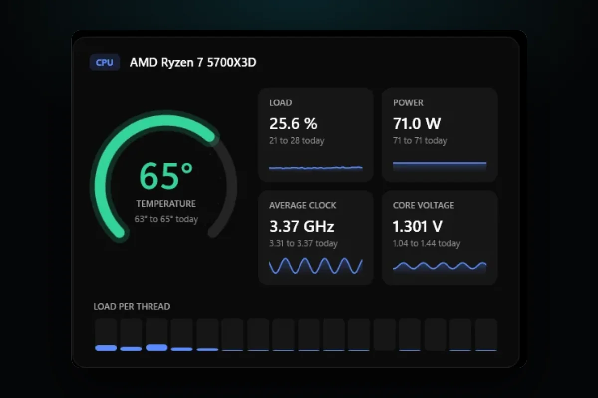

PC problems · Temperatures
Normal CPU temperature while gaming, and why yours jumps around
How RigSight shows a CPU temperature that jumps around in games, what a normal CPU temperature while gaming is on Ryzen, Intel, an AIO and laptops, and the limits AMD and Intel give.

The short answer
A normal CPU temperature while gaming is roughly 60 to 85°C on a desktop, lower with a strong cooler and higher on laptops and X3D chips. The limit depends on the model. AMD lists 89 to 95°C for recent Ryzen chips, Intel 100 to 105°C for recent Core chips. Worry when you sit at that limit.
A RigSight user on a laptop once wrote to me that the peaks on the one hour temperature chart jumped around every second. Part of that was my bug. The other part is something every gamer runs into when they ask what a normal CPU temperature while gaming is. A CPU's temperature doesn't sit still. It can go from 55 to 80°C and back within a second, and the number you happen to look at decides whether you worry.
How RigSight caught it
The laptop's chart was grouping readings by where they landed on the screen. Every time the chart slid along, the groups changed, and a CPU that jumped around a lot changed the line's shape each second. The whole story is in Three ways my temperature chart was lying. Since 0.16.1 RigSight gives each minute one point, the same minute every time, so a minute that already happened keeps its shape.
That left the real question. If a CPU spikes for a few seconds, what should you look at? In RigSight's temperature chart each minute can be shown as its average, its highest or its lowest, and hovering a minute shows all three. The average shows where the CPU settles in a game. The highest shows the short spikes that an average hides.
RigSight records the CPU temperature all day and keeps it as history, so you can see how hot it got during last night's game without starting a log first. The Temperatures page shows today's lowest and highest under the gauge and a chart for any range up to the last 12 months. It also shows how warm the CPU is at rest next to its usual resting temperature, with the last 30 days drawn as a line. A slow climb there points to dust or old paste.
Reports puts each peak next to the app that was doing the work. For a week, a month or a custom range, its Against your usual card compares the CPU in the game you played most with your own usual in that game from the weeks before. That tells you whether 83°C is normal for your PC, which matters more than any range online. Under Notifications > Temperature alerts in Settings you can set a CPU limit from 60 to 100°. It starts at 85°, and Reports tells you how many minutes the CPU spent at it. Like most tools that read the CPU's own sensors, RigSight needs admin rights for CPU temperature and power, and it says so when they're missing. RigSight is free and open source.
Normal CPU temperature while gaming on a desktop
On a desktop with a decent cooler, most CPUs sit somewhere between 60 and 85°C in a game. Games rarely load every core at once, so they run cooler than a stress test or a long video export. Look at where the temperature settles over a few minutes of play, not at single spikes.
Why CPUs run as hot as they do
Modern CPUs boost their clock speed until they run into a limit on power or temperature. A chip that reaches the high 80s isn't always struggling. Some are built to use all the room they have. Readings also jump more than a graphics card's, because a CPU has a small surface to move heat through and a game's load on it changes from one moment to the next.
Every CPU has a maximum temperature in its spec, often called Tjmax or TJunction. At that point it slows itself down to protect the chip. Intel describes this throttling as the processor lowering its clock speed when it goes above that figure. There is no single number that fits every CPU. Here are the makers' figures for some common chips.
- The AMD Ryzen 5 5600X is rated to 95°C. AMD has said up to 95°C is typical and by design at full load on this chip.
- The AMD Ryzen 7 5800X, Ryzen 9 5900X and 5950X are rated to 90°C, which AMD called typical at full load.
- The AMD Ryzen 7000 X series, such as the 7700X, is rated to 95°C.
- The AMD Ryzen 7 7800X3D is rated to 89°C, lower than the other Ryzen 7000 chips.
- The AMD Ryzen 7 9800X3D is rated to 95°C.
- The Intel Core i9 14900K is rated to 100°C.
- The Intel Core Ultra 9 285K is rated to 105°C.
For any other chip, search its name on AMD's or Intel's own site and look for "Max. Operating Temperature" or "TJUNCTION".
Ryzen
Ryzen chips have a reputation for running hot, and AMD has been open that this is on purpose. Soon after the Ryzen 5000 series came out, AMD's technical marketing director said temperatures up to 90 or 95°C at full load were typical and by design, because a higher allowed temperature lets the chip boost for longer before it backs off. In games, most Ryzen desktops with a reasonable cooler sit in the 60s to 80s. The Ryzen 7 7800X3D is the one to watch more closely, with a ceiling of 89°C.
With an AIO
An all-in-one liquid cooler moves heat to a radiator, which usually gives you lower peaks than a small tower cooler. Readings in the 60s and low 70s are common in games. The liquid takes time to warm up, so an AIO can look very cool for the first few minutes and then rise to a steady level.
On a laptop
Laptop CPUs share a small cooler with the GPU, and readings in the 80s and low 90s are common in games. They also tend to jump around the most, as that user's chart showed. The laptop maker decides the power limits and how fast the fans spin, so a laptop that sits at 90°C may be doing exactly what it was tuned to do. Intel points laptop owners to the maker for this.
How to check your CPU temperature and fix it when it runs hot
Windows' Task Manager shows your graphics card's temperature, but not your CPU's. The BIOS shows it only at rest, which tells you little about gaming. AMD's Ryzen Master and Intel's Extreme Tuning Utility read their own chips, and a sensor app such as HWiNFO can log readings to a file while you play. Whichever you use, look at the highest reading during a session, because the number you see after you alt-tab out can be lower than the peak was.
If it does run hot, Intel's support checklist is a good order for any brand.
- Make sure the cooler is rated for your CPU. Intel's rule is that the cooler's rated wattage should be at least the processor's base power. A small cooler that came with a 65 W chip won't keep up with a 125 W one.
- Check the cooler is mounted firmly and the protective plastic film was removed from its base. It's an easy thing to miss on a new build.
- Check the thermal paste. If the PC is several years old, or the cooler has been taken off and put back, fresh paste can help.
- Check that every fan spins, including the CPU cooler's own fan or the AIO's radiator fans. Intel's checklist also says to make sure an AIO's pump and fans are plugged into the right motherboard headers. A pump on a header that slows it down at idle, or a pump that has failed, can make an AIO CPU hit its limit in games.
- Check case airflow, so the cooler isn't breathing air the graphics card already heated.
- Look at the BIOS settings. Intel notes that some motherboards ship with settings that run beyond Intel's guidelines, and suggests loading the BIOS defaults or asking the motherboard maker whether overclocking settings are turned on. Change BIOS settings only if you're comfortable there, and write down what you change.
- On a laptop, play on a hard surface, keep the vents clean, and try the maker's quieter or balanced mode to see whether the temperature falls more than the frame rate.
A frame cap helps the CPU too, because fewer frames means less work per second. For the graphics card side, see normal GPU temperature while gaming.
Next, look up your exact CPU's maximum on AMD's or Intel's site, then play for half an hour and note where the temperature settles. If it stays 10 degrees or more under the limit, you're fine. If it sits at the limit, start with the cooler mount and the fans.
Questions people ask
What is a normal CPU temperature while gaming on Ryzen?
Most Ryzen desktops sit somewhere in the 60s to 80s °C in games. AMD has said that up to 90°C on the Ryzen 7 5800X and 95°C on the Ryzen 5 5600X is typical and by design at full load, and games are usually lighter than full load. The Ryzen 7 7800X3D has a lower limit, 89°C.
What is normal CPU temperature while gaming with an AIO?
An AIO liquid cooler usually gives lower peaks than a small air cooler, and the 60s and low 70s °C are common in games. If an AIO CPU reaches its limit, check that the pump runs and is plugged into the right header, and that the radiator fans spin.
What is normal CPU temperature while gaming on a laptop?
Laptop CPUs run hotter than desktop ones, and readings in the 80s and low 90s °C are common in games. The laptop maker sets the limits and the fan behaviour, so their support page has the right numbers for your model.
What is normal CPU temperature while gaming in Fahrenheit?
60 to 85°C is 140 to 185°F. AMD's 95°C limit is 203°F, and Intel's 100°C limit is 212°F.
Why is my CPU hotter than my GPU while gaming?
CPUs have a smaller surface to move heat through, and many are tuned to boost until they reach a set temperature. A CPU that reads hotter than the GPU in the same game is common and not a fault on its own.